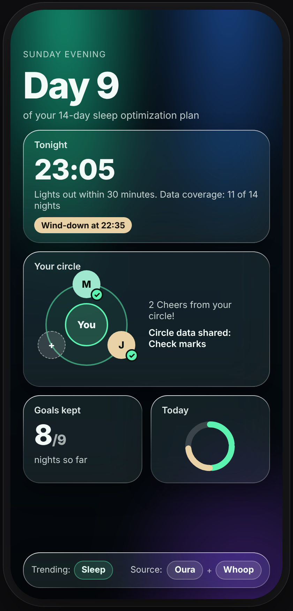

Wearables tell you what happened. TrendSpotter helps you change what happens next, with your circle.

Your devices produce dozens of scores. We turn them into a single habit for 14 days, then you keep, adjust or swap it.
We show how many nights your wearables actually captured, so a missing night never reads as a failure.
Your circle sees check marks and cheers. Never your sleep, your scores or your data.